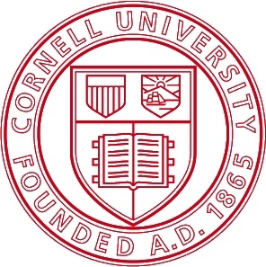

GDIAC News
|
2013 Showcase Winners Congratulations to our Showcase Winners. Audience Choice (Intro Division):
Audience Choice (Advanced Division):
Director's Choice:
With 20 student projects it was the largest showcase we have had in years. Thanks to the Ithaca Times for publicizing the event and bringing in a lot of people from the surrounding community. We all had fun and we hope to see everyone again next year. Date Posted: May. 14, 2013 | Permalink |
|
|
List of Showcase Exhibitors The Showcase page now has a list of the games exhibiting this year at the Showcase. Some of the students have made videos, which we hope to post before Saturday's showcase. Date Posted: May. 8, 2013 | Permalink |
|
|
2013 GDIAC Showcase After a quiet 2012, the GDIAC Showcase returns, even bigger than ever. This year we have a record number of projects in both CS/INFO 3152 and CS/INFO 4152, including the most number of mobile games that we have ever had. The showcase also includes several interesting independent study projects that explore interesting concepts such as sound-only gameplay. The showcase is open to the general public, so that everyone can play and experience these projects. In addition, the public is welcome to vote for the favorite in the award ceremony at the end. Come join us and make this our best Showcase yet. Date/Time: May 11th from 3 - 6 pm Date Posted: Apr. 11, 2013 | Permalink |
|
|
 |
Date/Time: April 3rd from 4 - 6 pm Bits On Our Minds 2013, the annual showcase for the school of Computing and Information Science will be held April 3rd, 2011 from 4pm - 6pm. While this is a general showcase for research and projects and computer science, BOOM always includes a sizable number of game projects. In particular, BOOM 2013 is a good place to see independent projects like the Cornell start-up Splat. Date Posted: Mar. 13, 2013 | Permalink |
|
Spring 2013 Afterschool Program The afterschool program is now taking applications for Spring 2013. The program is open to any 7-12 grade students in the Tompkins county area. This semester the program will be held Wednesdays 4-6pm, starting on February 20th (and running for 10 weeks). The activities charge for this semester is $50 for all 10 weeks. If you a child interested in joining the program, please contact the GDIAC director. Date Posted: Apr. 26, 2010 | Permalink |